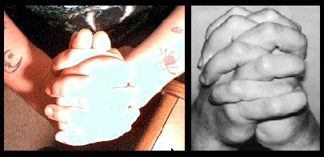

*PLEASE NOTE: THE HAND POSITIONS ARE OPTIONAL AND NOT MANDITORY. SOME OF THESE MUDRAS MAY BE DIFFICULT FOR THOSE WHO HAVE LARGER HANDS. IF THIS IS THE CASE, JUST SKIP THEM. THEY ARE NOT NECESSARY.
|  | 1. Fold your hands. DO NOT fold your thumbs, place them side by side and keep your palms together.
2. Inhale and fill your lungs. 3. Drop your chin to your chest. 4. Contract your anus. |

| 5. Exhale and chant V-V-V-A-A-A-U-U-U-M-M-M-M and concentrate on your second sacral chakra. 6. Align your chakra point facing upwards as illustrated at left. Repeat the above eight times. When you are finished, visualize yourself in an orange aura for a few minutes while focusing on feeling your sacral chakra. |